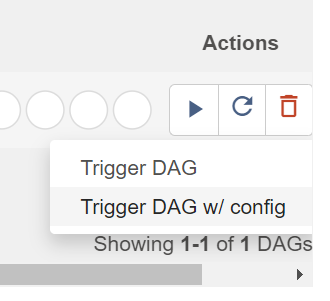
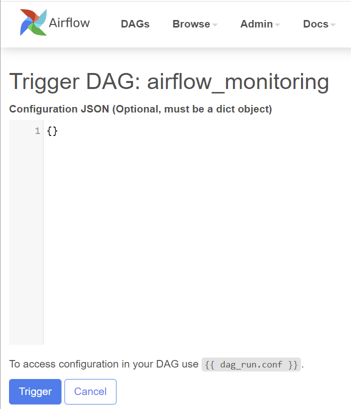
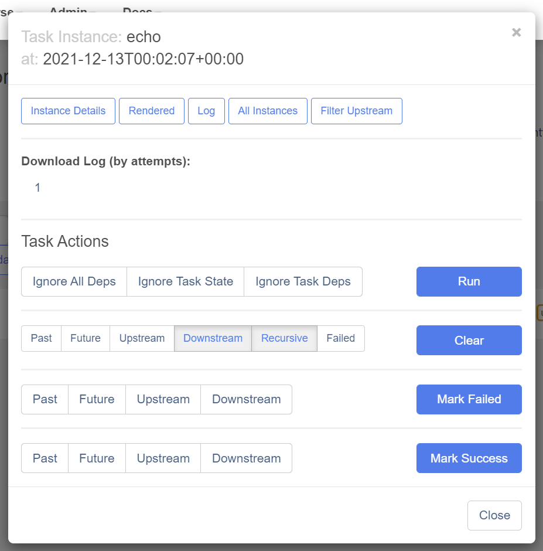
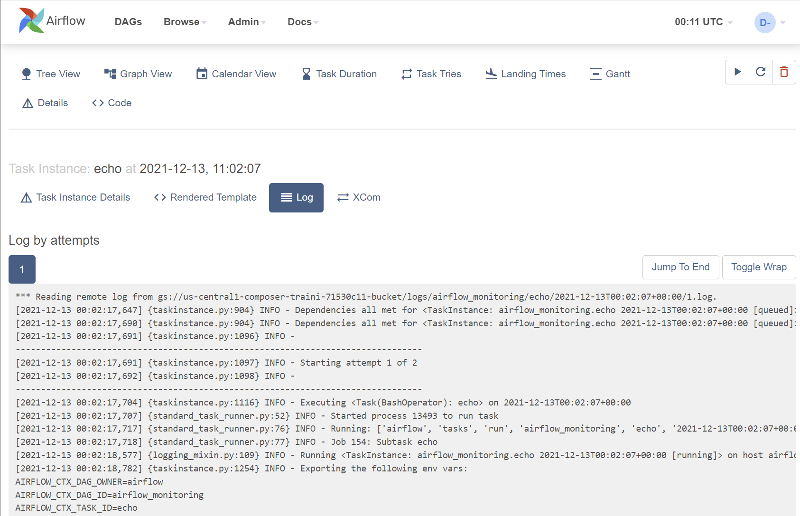
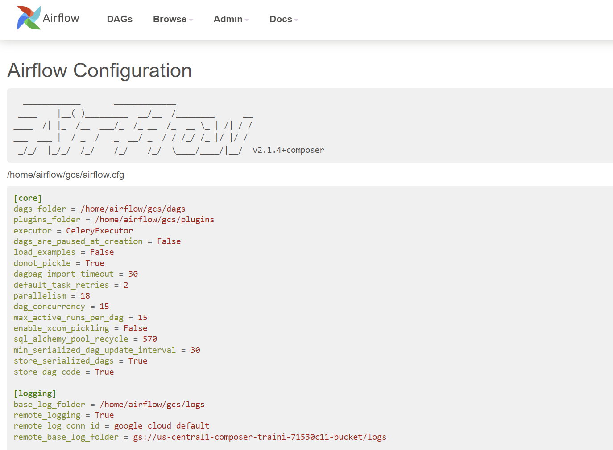
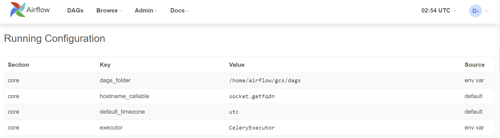
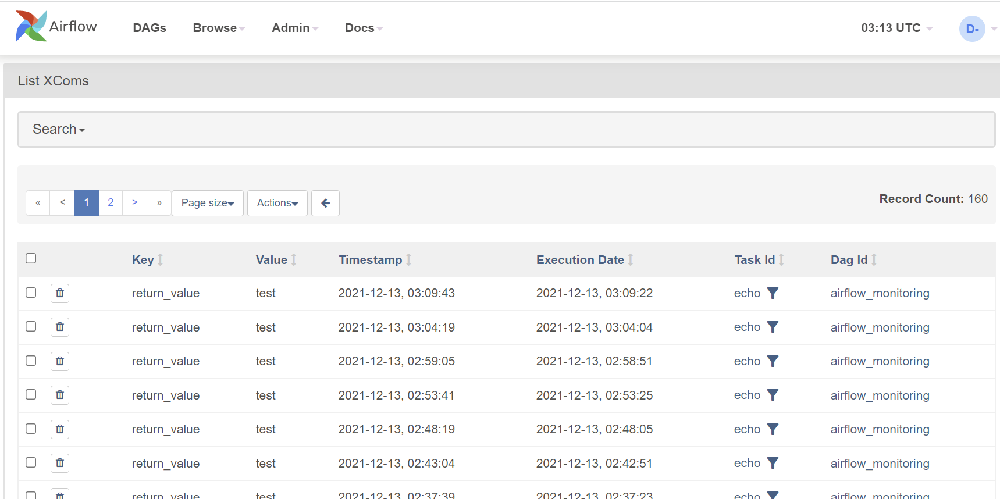

A tour of the Airflow UI
The Airflow UI allows you to monitor and troubleshoot your data pipelines. It can also be helpful to manage Airflow cluster, and you can view and set up Airflow's:
- Variables
- Configurations
- Connections
- Plugins
- Pools
- XComs
DAGs view
The default page of Airflow UI is the DAGs view. It lists all the DAGs that are available on this Airflow instance. You can see exactly how many tasks succeeded, failed, or are still running.

From here, you can manually trigger the DAGs by clicking the Play button. This can be beneficial if you have a scheduled DAG that failed and would like to re-run it:

Note that there is also an option to pass parameters (a JSON blob) when triggering dags. This enabled flexibility when running a DAG:

Individual DAG views
After a short tour of the overall DAG view, let's look at some individual DAG views.
There are three kinds of individual DAG views: Tree view, Graph view, and Calendar view.
Tree view
After clicking the DAG name, the tree view is the default view.
A tree representation of the DAG that spans across time. You can tell each task's status in different colors.

Graph view
The graph view is my favorite view when I troubleshoot the issue with Airflow UI. It visualizes your DAG's dependencies and their current status for a specific run.

After clicking the task, A pop-up shows, you can conduct a few actions from the pop-up dialog for this specific task instance.

One of the most valuable buttons here is Log because it shows you the stack trace.
When a DAG fails, you typically begin the troubleshooting process by:
- Opening the Airflow UI
- Clicking the failed DAG
- Going to
Graph view - Clicking the failed task (marked in
red) - On the task instance pop-up dialog, click
Logto check the logs. The stacktrace is here:

If the error is caused by some solvable issue (for example, the input file didn't arrive), after fixing the issue, go back to the task instance pop-up dialog and click the Clear button. This will clear the status of the current task instance and it will be re-run. If there are following tasks after it, they will be re-run as well.
Calendar view
The calendar view gives you an overview of your entire DAG's history over months, or even years. Letting you quickly see trends of the overall success/failure rate of runs overtime.
It can be pretty handy to get an idea of how stable the DAG is. For example, if your DAG is waiting for files to land on a Cloud Storage bucket, this can tell you if they have been late in the past X days:

Admin pages
Variable view
The variable view allows you to list, create, edit or delete the key-value pairs used in Airflow pipelines.
Value of a variable will be hidden if the key contains any words in (password, secret, passwd, authorization, api_key, apikey, access_token) by default, but can be configured to show in plain-text.
It is generally not recommended to store sensitive data like passwords and API keys within Airflow variables. On Google Cloud, Cloud Composer has native integration with Google Cloud Secret Manager; you can find a detailed guide on how to use it here.
Airflow variables can be helpful to store insensitive environment variables. For example, database connection strings, API endpoints, GCS bucket names or paths, etc.

Configuration view
The Configuration view page displays all the Airflow configurations, including the ones in airflow.cfg and Running Configuration.


Note that default configurations in airflow.cfg are overwritten by the environment variables. As per Google document, these environment variables can be set from cloud console, gcloud cli, API, and Terraform.
Connection view
In the context of Airflow, a connection stores information such as hostname, port, login, and passwords to other systems and services. The pipeline code you will author will reference the conn_id of the Connection objects.
On the connection view page, connections information is shown and can be edited:

In the last chapter, we deployed a Cloud Composer environment with a service account. In the Airflow pipelines in Composer, by default, they will use this service account to authorize all the Google Cloud API calls. This saves time setting up Google Cloud connection on the Airflow configuration view page.
XComs view
XComs (short for cross-communications) is a mechanism that let tasks talk to each other, as by default, Tasks are entirely isolated and may be running on completely different machines.
XComs view page shows all the values that are stored as XComs. It can be helpful when troubleshooting failed DAGs that use XComs to pass the values from one task to another:

Summary
Airflow UI can be pretty valuable for:
- Data engineers to troubleshoot DAG failures
- Managers to quickly get an idea about scheduled workloads
- Administrators to set up Variables and Connections. However, these are better done via deployment scripts via gcloud cli, API, or Terraform
That's all for the UI bit, time to write and run some DAGs.